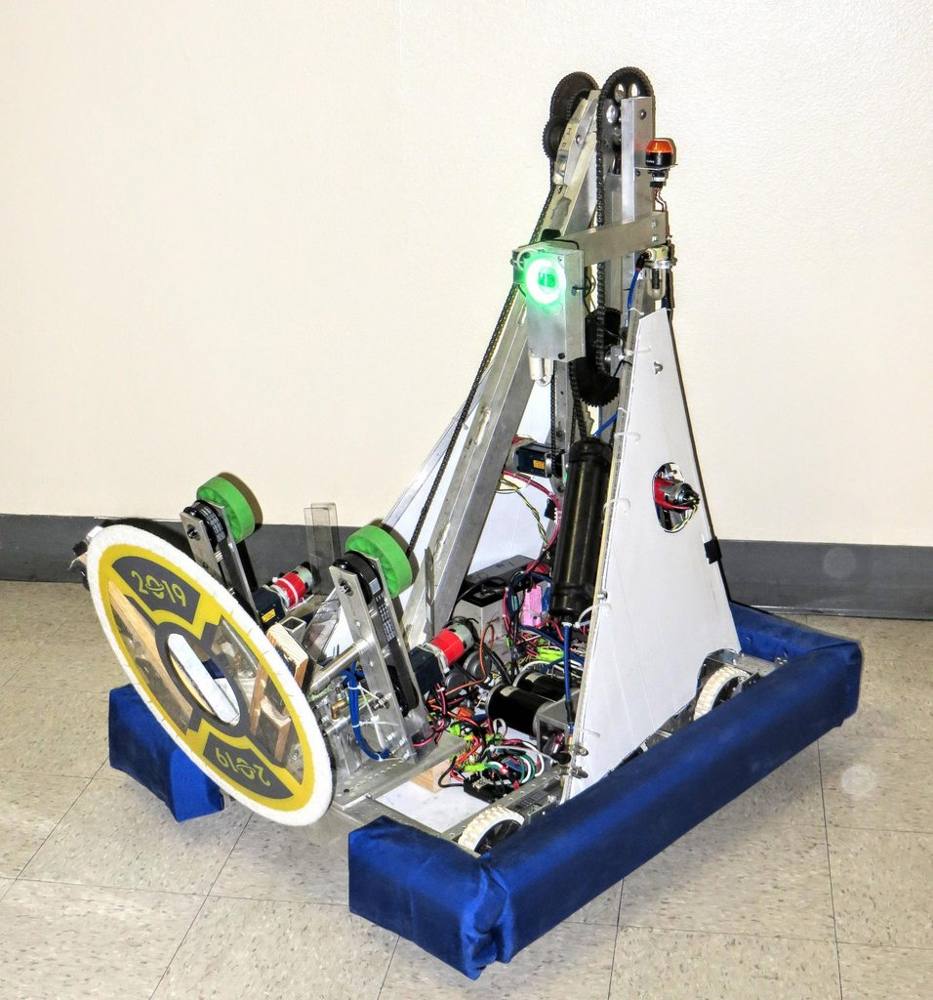
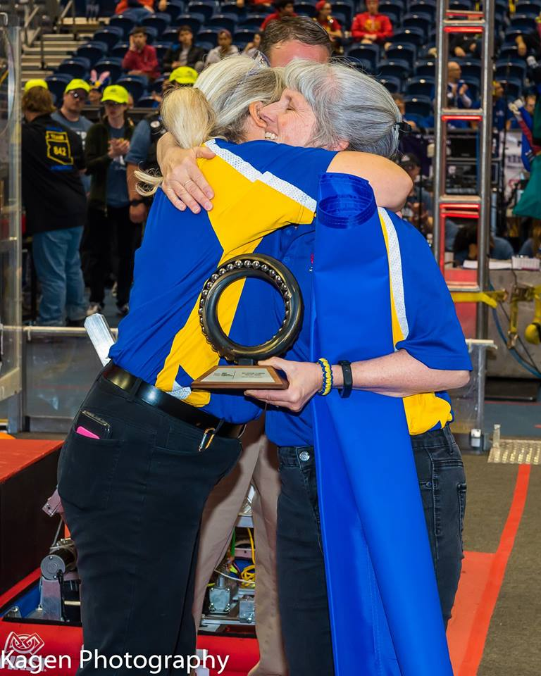
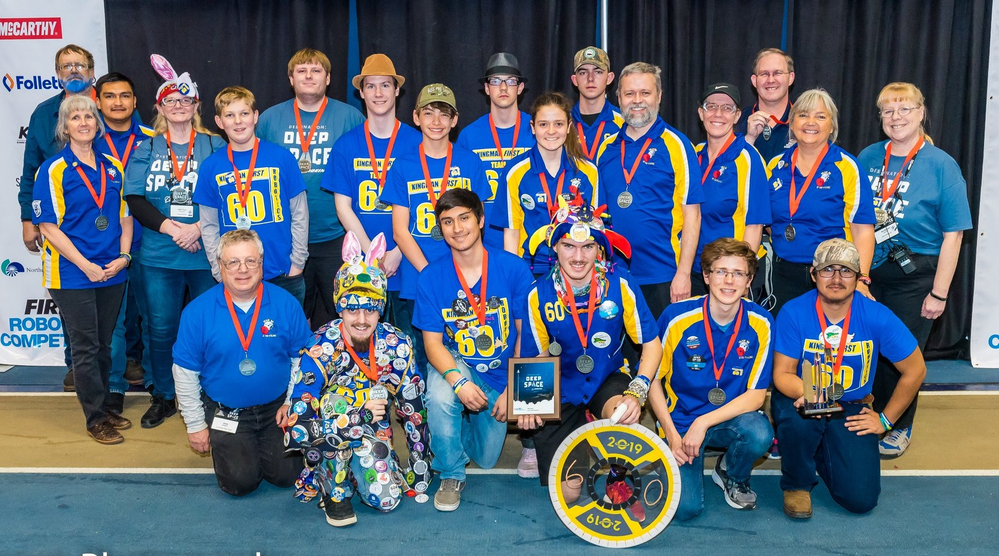

We named our robot HAL after the computer in 2001: A Space Odyssey. It seemed fitting with the year’s game of Deep Space. Team 60 competed in two regional events. At the Arizona North Regional we finished qualification matches with a rank of 33. We were chosen by the seventh seed alliance to play defense in playoffs. This alliance upset several teams through quarter and semifinals until we finished as runner up. At the second competition in Las Vegas we were invited to the eighth seed alliance. We had again demonstrated a stellar defense playing against the top teams.
Our mentor Celeste Lucier was selected for the Woodie Flowers Finalist Award. She has volunteered with our team since 2010. In addition to mentoring FRC, she has also coached teams at the FTC and FLL levels. This year, both the FTC and FLL teams she led qualified for state. Mrs. Lucier loves her students and dedicates countless hours helping us become all we can.
  